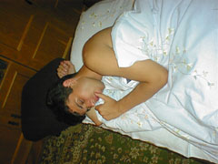
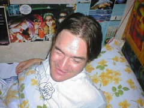
Dani frissen ébresztve. Érezzük át a küszködést, ahogy próbálja kinyitni a szemeit, a ballal szemmel láthatóan jobban halad, mint a jobbal. :P
Vegyük észre a csillogó homlokot! Tünemény!
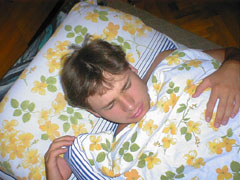
Balu frissen ébresztve. Fentiekhez hasonló tünetegyüttes, mindenki volt már ilyen helyzetben, nem kell magyarázni. ÷)
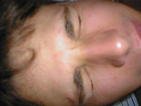
Balu
ismételt ébresztések során. Nemhogy kifelé nyitná a szemeit, de még össze
is akarja szorítani! ÷)
Örök engedetlen.
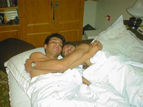
Andrej & Csányamami in flagranti. Minden magáért beszél. Vegyük észre hogy egy pajkos kis kéz nem látszik, vajon merre járhat? ÷)
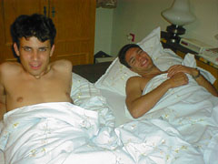

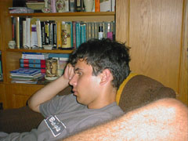
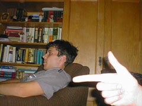
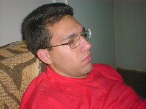
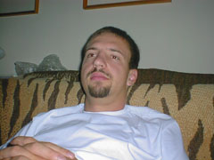
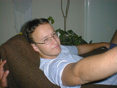
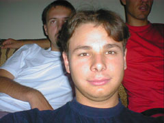
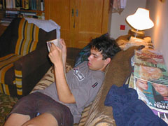
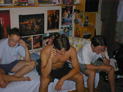
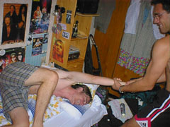
Dani 1.
Dani hozzánõtt az ágyhoz. Statáriálisan az azonnali leoperálás mellett döntöttünk. ÷)
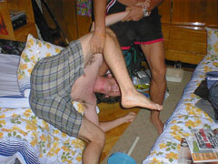
Dani 2.
Leoperálás második üteme.
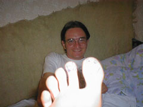
Dani 3.
Sajos nem látszik rendesen, de Dani nagylábujja épp beint a nyájas olvasónak.
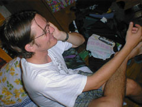
Dani 4.
Dani telefonál. Lábával már a sorozat hatodik képéhez edz, miközben üres kezébe is telefont (vagy valami mást?) vizionál. ÷)
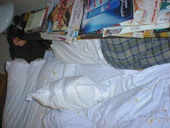
Dani 5.
Dani kipróbálta hogy befér-e az ágynemûtartóba. A legszebb az, hogy nem is ivott! ÷)
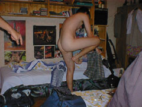
Dani 6.
És a top, a képek képe, egy gyöngyszem a rovarvilágból:
Dani ciripel, LOL! :D
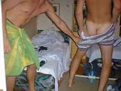
Moby Dick a fehér bálna.
(Társadalmi nyomásra legalább egy kompromittáló képet magamról is be kellett válogatnom khm-khm.... ÷)